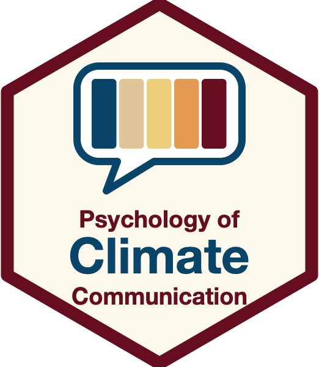

The Psychology of Climate Change Communication
Theoretical insights and practical applications — Syllabus, Autumn 2026

Course Description
Climate change communication influences how individuals, organizations, and societies perceive climate change, and how they react to it. In this course, we will discuss research findings in environmental psychology and communication science to understand specific challenges of climate change communication and how to address them.
Learning Objectives
The course will provide students with an overview of current psychological theory and best practices in the area of climate change communication. At the completion of the course, students will be able to:
- Independently and accurately recognize challenges in climate change communication
- Clearly describe the psychological mechanisms that influence climate change perceptions and attitudes
- Critically apply insights from psychology to evaluate the effectiveness of climate change communication
- Strategically design an effective climate change communication campaign
General Information
- ETH Zurich, room CHN G 42
- Tuesdays 16:15–18:00, weekly, Autumn 2026 (September 15 – December 15, 2026)
- An up-to-date schedule can be found on the course website. This is also where slides and additional materials will be posted.
Participation
Students are expected to actively participate in the course by drawing on their own reading of the materials, as well as their personal experiences and perspectives. Participating means asking deep and challenging questions, but also asking simple clarification questions like “I’m just not getting this, please explain it in some new way” or “I’m lost, can you remind me why we’re talking about this?”.
Materials
Course plan, reading materials, and slides will be available on Moodle and on https://github.com/janpfander/course_climate_communication. Please note that no recording will be available for this course.
Assessment
This class is not graded, students either pass or fail. Students are expected to prepare for class by completing assigned readings, attend all lectures, and meaningfully contribute to in-class exercises and discussion.
Course Structure
| # | Date | Topic | Literature |
|---|---|---|---|
| 1 | 15.09.2026 | Introduction and organizational questions — Viktoria Cologna & Jan Pfänder Why is climate change communication important and why is it so challenging? |
Markowitz, E. M., & Guckian, M. L. (2018). Climate change communication: Challenges, insights, and opportunities. In S. Clayton & C. Manning (Eds.), Psychology and Climate Change. Human Perceptions, Impacts, and Responses. (pp. 35–63). Academic Press. https://doi.org/10.1016/B978-0-12-813130-5.00003-5 |
| 2 | 22.09.2026 | Climate change, the deficit model, and public opinion — Viktoria Cologna What is climate change and how does it occur? Does knowledge-focused communication about climate change lead to more concern and engagement? What is the public opinion about climate change? |
Metag, J., Füchslin, T., & Schäfer, M. S. (2017). Global warming’s five Germanys: A typology of Germans’ views on climate change and patterns of media use and information. Public Understanding of Science, 26(4), 434–451. https://doi.org/10.1177/0963662515592558 Leiserowitz et al. (2024). Climate Change in the American Mind: Beliefs & Attitudes. [TODO: full citation missing from template’s reference list] Shi, J., Visschers, V. H. M., Siegrist, M., & Arvai, J. (2016). Knowledge as a driver of public perceptions about climate change reassessed. Nature Climate Change, 6(8). https://doi.org/10.1038/nclimate2997 |
| 3 | 29.09.2026 | Guest speaker: Dr. Leonard Creutzburg — Invited speaker [TODO: rewrite for the actual speaker] Dr. Lydia Ebersbach is media relations manager at WWF Switzerland. She holds a Magister in History, Politics and Economics from Potsdam University, a PhD in Marketing from St. Gallen University and completed a CAS in Storytelling and Brand Journalism at MAZ / HSL. She will talk to us about the challenges of climate communication from the perspective of a Swiss NGO. |
[TODO: framing literature listed here in the template likely belongs to session 4] Lakoff, G. (2010). Why it Matters How We Frame the Environment. Environmental Communication, 4(1), 70–81. https://doi.org/10.1080/17524030903529749 Dasandi, N., Graham, H., Hudson, D., Jankin, S., vanHeerde-Hudson, J., & Watts, N. (2022). Positive, global, and health or environment framing bolsters public support for climate policies. Communications Earth & Environment, 3(1), 239. https://doi.org/10.1038/s43247-022-00571-x Supran, G., & Oreskes, N. (2021). Rhetoric and frame analysis of ExxonMobil’s climate change communications. One Earth, 4(5), 696–719. https://doi.org/10.1016/j.oneear.2021.04.014 |
| 4 | 06.10.2026 | Mental models and framing — Jan Pfänder What are mental models? Which frames are used in climate change communication? How can we frame climate change in a way that allows us to reach different population groups? What are the strategies, channels, and messages used by different stakeholders? |
tbd |
| 5 | 13.10.2026 | Climate change misinformation — Jan Pfänder What are discourses that delay action on climate change? How do you identify climate science denial and how do you respond to it? |
tbd |
| 6 | 20.10.2026 | Emotions and behavior — [TODO: lecturer] What is the role of emotions in climate change communication? How can we communicate about climate change in a way that increases feelings of self-efficacy? How does media usage relate to behavioral intentions? |
Myers, T. A., Roser-Renouf, C., & Maibach, E. (2023). Emotional responses to climate change information and their effects on policy support. Frontiers in Climate, 5. https://www.frontiersin.org/articles/10.3389/fclim.2023.1135450 Ogunbode, C. A., Doran, R., Hanss, D., Ojala, M., Salmela-Aro, K., van den Broek, K. L., Bhullar, N., Aquino, S. D., Marot, T., Schermer, J. A., Wlodarczyk, A., Lu, S., Jiang, F., Maran, D. A., Yadav, R., Ardi, R., Chegeni, R., Ghanbarian, E., Zand, S., … Karasu, M. (2022). Climate anxiety, wellbeing and pro-environmental action: Correlates of negative emotional responses to climate change in 32 countries. Journal of Environmental Psychology, 84, 101887. https://doi.org/10.1016/j.jenvp.2022.101887 Stanley, S. K., Hogg, T. L., Leviston, Z., & Walker, I. (2021). From anger to action: Differential impacts of eco-anxiety, eco-depression, and eco-anger on climate action and wellbeing. The Journal of Climate Change and Health, 1, 100003. https://doi.org/10.1016/j.joclim.2021.100003 |
| 7 | 27.10.2026 | A question of trust — [TODO: lecturer] Which actors are the most trusted sources of information about climate change? How can we maintain and potentially increase trust in climate change communicators? What is the role of climate scientists in communicating and engaging on the topic? |
Cologna, V., Kotcher, J., Mede, N. G., Besley, J., Maibach, E. W., & Oreskes, N. (2024). Trust in climate science and climate scientists: A narrative review. PLOS Climate, 3(5), e0000400. https://doi.org/10.1371/journal.pclm.0000400 Oreskes, N. (2020). What Is the Social Responsibility of Climate Scientists? Daedalus, 149(4), 33–45. https://doi.org/10.1162/daed_a_01815 |
| 8 | 03.11.2026 | Guest speaker: Dr. Cornelia Schwierz — Invited speaker [TODO: confirm speaker still current] Dr. Cornelia Schwierz is Head of Climate Monitoring and Information at the Federal Office of Meteorology and Climatology (MeteoSwiss). In her talk, she will tell us about the challenges the Federal Office faces in communicating about climate change and how they overcome them. |
Preparation: Come to class with at least 3 questions for our guest speaker. |
| 9 | 10.11.2026 | Climate change in the media — Viktoria Cologna How has climate change communication in the media evolved over time? How is climate change depicted in the media? How does imagery affect public perceptions of climate change? |
Metag, J., Schäfer, M. S., Füchslin, T., Barsuhn, T., & Kleinen-von Königslöw, K. (2016). Perceptions of Climate Change Imagery: Evoked Salience and Self-Efficacy in Germany, Switzerland, and Austria. Science Communication, 38(2), 197–227. https://doi.org/10.1177/1075547016635181 O’Neill, S. J. (2013). Image matters: Climate change imagery in US, UK and Australian newspapers. Geoforum, 49, 10–19. https://doi.org/10.1016/j.geoforum.2013.04.030 |
| 10 | 17.11.2026 | MISSING — [TODO: lecturer] [TODO: topic missing in the template — define this session] |
Barkemeyer, R., Figge, F., Hoepner, A., Holt, D., Kraak, J. M., & Yu, P.-S. (2017). Media coverage of climate change: An international comparison. Environment and Planning C: Politics and Space, 35(6), 1029–1054. https://doi.org/10.1177/0263774X16680818 Klinger, K., & Metag, J. (2021). Media Effects in the Context of Environmental Issues. In The Handbook of International Trends in Environmental Communication. Routledge. Schäfer, M. S., & Painter, J. (2021). Climate journalism in a changing media ecosystem: Assessing the production of climate change-related news around the world. WIREs Climate Change, 12(1), e675. https://doi.org/10.1002/wcc.675 |
| 11 | 24.11.2026 | Guest speaker: Cornelia Eisenach — Invited speaker [TODO: blurb below describes a different person (Sabrina Weiss) — rewrite for the actual speaker] Sabrina Weiss is a Swiss climate journalist. She holds a BA in Media & Communication Sciences from the University of Zurich and an MSc in Communication Psychology from the London School of Economics and Political Science. Sabrina Weiss is the co-founder of the Climate Journalism Network. In her talk, she will tell us about the challenges of climate change communication in journalism and how to overcome them. |
Preparation: Come to class with at least 3 questions for our guest speaker. |
| 12 | 01.12.2026 | Guest speaker: Reto Knutti — Invited speaker [TODO: description below is a wrap-up summary from the old course, not a speaker blurb — rewrite] Based on what we have learned in the previous weeks, we will summarize and discuss successful communication strategies. |
Maibach, E. W., Uppalapati, S. S., Orr, M., & Thaker, J. (2023). Harnessing the Power of Communication and Behavior Science to Enhance Society’s Response to Climate Change. Annual Review of Earth and Planetary Sciences, 51(1). https://doi.org/10.1146/annurev-earth-031621-114417 Corner et al. (2018). Principles for effective communication and public engagement on climate change. [TODO: full citation missing from template’s reference list] |
| 13 | 08.12.2026 | Guest speaker: Industry/Kanton — Invited speaker [TODO: placeholder title — confirm speaker. Description below is the old course’s recap-session text] We will reflect on the contributions by our guest speakers and how they relate to what we have learned in the previous sessions. In preparation for the exam, we will recap the main lessons learnt in this course. |
|
| 14 | 15.12.2026 | Discussion and lessons learnt — Viktoria Cologna & Jan Pfänder |